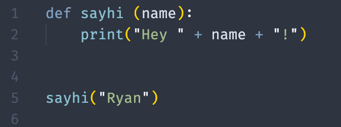
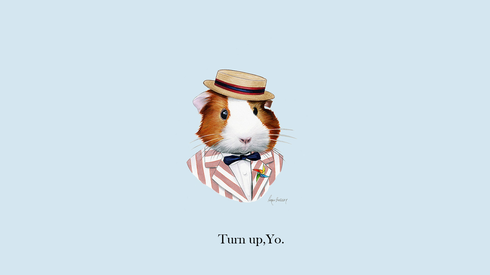
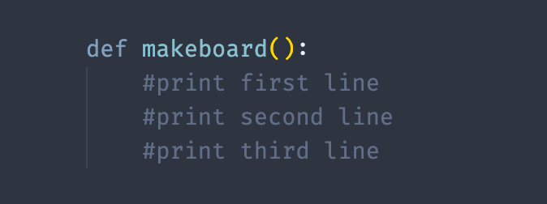
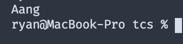
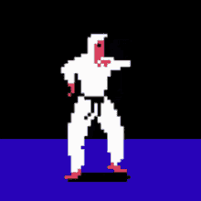
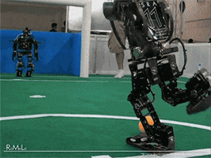
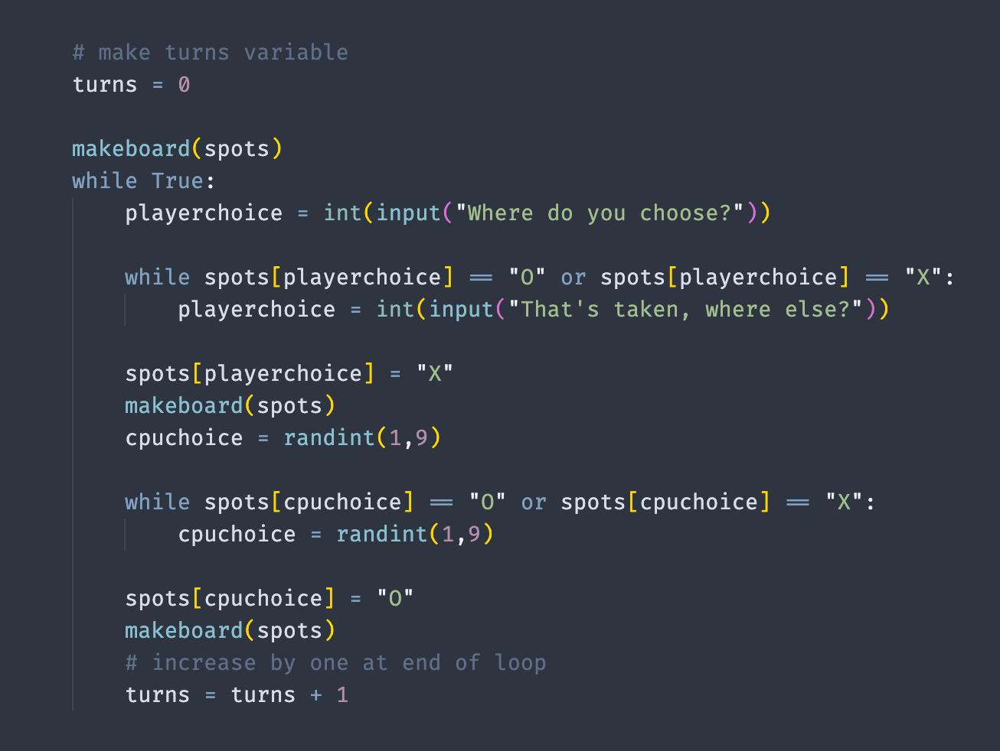
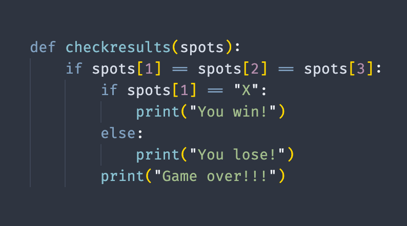
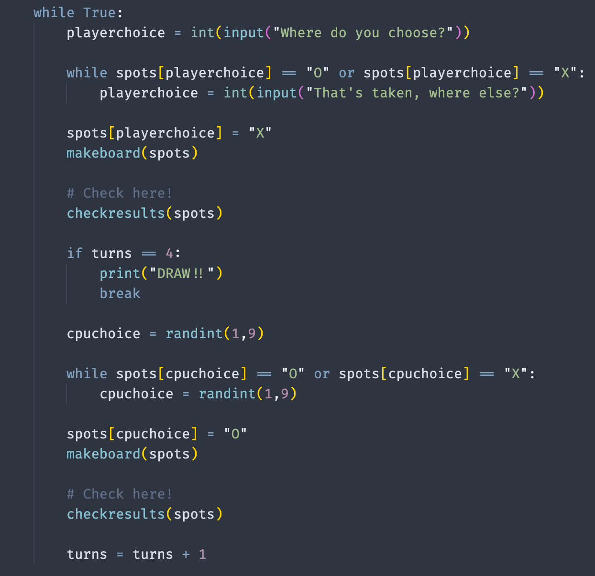

Intro -
Hello there! My name is Ryan and I am
one of the code coaches here at The Coder School. For our coding event, you're going to learn how to make a tic tac toe game
using the python programming language. 😎
Don't worry if you haven't used python before, this project that we will work on is a great first program! And if you are familiar with python that's even better, the tic tac toe project is perfect for introducing more advanced topics as well.
Getting Started -
For today we are going to use this site called repl.it. It's an online based code compiler (program that runs
code for us) and is one of my favorites. It also has dark mode which may or may not be why it is my favorite to use... Repl should
already be on the other tab on this computer, so go ahead and check it out!
A print statement is a great first line of code to write. Print statements allow the program to show the user, or person who runs
the program, information that the programmer, you in this case, want to display. This is how a print statement looks:
print("Hello World")
Notice how the word print is all lowercase despite being the first word, then there are parentheses that directly follow it, and there is information in the parentheses. In this case, it is 2 words that have quotation marks at the beginning and end, this is called a string! Strings are any text that you want to place around these quotation marks, so mine is "Hello World." Try out writing another print statement that displays your name!
Functions -
Functions are really helpful in python, they allow you to write code that can be reused whenever you want! Every function begins with "def" which is short for define, then the name of the function, and finally the information that the function uses. Here's an example:
Note that the instructions for the function are placed on the next line and indented (the tab key can indent for you). Then, when we want to use the function, we call it and give it the information it asks for when we define it. In this case it asks for a name in the parentheses, so I used "Ryan" for mine! You can make any function that asks for any amount of things you want. The fancy word for these things that the function asks for is called "parameters." Use it for serious coding street cred.
Making a grid -
Now that you made a function, lets see if you can make a function that makes a tic tac toe grid! If we have more than one print statment, each one prints on its own line. With this in mind, how do you think we can make a tic tac toe board using these print statements?
hint:
use spaces (" "), vertical lines ("|"),
and hyphens ("-")
Should look something like this:
An array -
So we have this grid, but we need to make it where we can change the spots of it to either "X" or "O",
standard tic tac toe rules. What we can do is make a variable, and use this thing called an array to store more than one thing.
Think of it like a list, where each thing is separate, but you can look at the whole list when you call the variable.
Here's an example:
For every array there are brackets around the whole list of items, and each one is separated by a comma.
We can also look at (and change) individual parts of our array by calling the name of our array, then brackets around the spot we
want to look at.
Like this:
Here is the output:
See how when I want the first item, I call favoritecharacters[0] to get Aang, not favoritecharacters[1].
In arrays the first item is always at the position of zero!
With this in mind, how can we use an array to store the spots on our tic tac toe grid? Let's use the numbers 1-9 as placeholders
on our board, and to make things easier, lets have our array begin with an empty string, ("") so that we can call our array with
array[1] being "1" instead of "2"!
Hint: spots = ["", "1", "2", etc.]
Upgrading our board -
Now that we have our array that has our spots, we need to have them show on our board when we use our
makeboard function. This is where we start spicing things up with adding multiple pieces of information into one print statement!
Lets go back to our function that makes the tic tac toe board, and where we have the empty spaces we are going to add in our spots
from our array.
Remember how we got Aang by using array[0]? We can use that same method, but add it into our existing function that makes our board.
Let's see how the first line would look:
Getting input -
Okay we have a working function that uses the spots of the array and prints out a board with that information,
pretty sweet right? The next thing to do is to get user input, and then change the spot on the board that the user chooses to an "X"
based off the number that is entered. This code is going to go at the bottom of your program, and for now, lets only ask once for
user input.
It should look something like this:
playerchoice = int(input("Where do you choose?"))
spots[playerchoice] = "X"
Now lets see this in action! Call your makeboard function before and after you ask for input to see your spot on the board become an X! Like this:
Let's loop -
Seeing our board change is rad, but we should improve it so we can change it more than once. We can achieve this with a loop! A loop, much like the name implies, can make groups of code happen more than once when a program is run. In this case, we are going to use a while True loop. Essentially, it will run forever until we tell it to stop. Pretty OP if you ask me. Here is how we can use the while True loop for our game:
Give your code a run and make sure you can fill the entire board!
The CPU Opponent -
Here is where we code our own opponent to play against! The first thing we want to do is import a function that can generate a random number. We can do this by using an import statement, and using python's "random" library to help us out. Here is what we should put at the first line of code in our file:
from random import randint
The next step is for us to add a cpu choice into our loop that asks the user for input. After we ask the player, the cpu takes its turn using a randomly generated number between 1 and 9. Here is how we can code that:
Controlling input -
So we have the player and the cpu playing against each other, but nothing is stopping each side from picking spots that are already taken. This is where a little bit of computer logic comes into play. Inside our main loop, we need to check if that spot is taken with either an X or O.
Inside of our while loop, we actually will use another while loop! Those loops will run as long as
the spots that either the player or computer pick are taken, so if the spot that either the player or cpu chooses is blank,
the loops won't run!
We can check the values by using two equal signs, with either item we are comparing on each side. If they are the same, then it
is considered True, and if they are not the same then it is considered
False.
Tie Game -
Now that we have a player and computer turn, we need to make sure that there is code for a tie. Otherwise, our game will become an infinite loop on the last turn which is no fun. To create a way to end the loop, we are going to make a variable called "turns" and set it to 0 before our loop starts. Then, at the end of the loop, we will add 1 to it.
In tic tac toe, a tie happens when both the player and cpu played 4 turns, then the player has the last turn to either win or tie. With that in mind, lets check in the middle of our loop if our turns is 4, then we can end the loop using a break statement.

Winning and Losing -
Time to determine winning and losing! What we are going to do is add a function before our game loop that will run after every move to check if there is a winner on the board. In total, there are 8 possible ways to win or lose in tic tac toe. Here is the start of the function, you go ahead and try to figure out the other win/lose cases!:
Now all thats left is to call our checkresults function after each turn and BAM! You made a fully operational tic tac toe game :)
